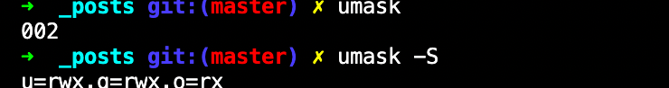

기본 접근 권한 설정(umask), 특수 접근 권한
기본 접근 권한
- 리눅스에서 파일, 디렉터리를 생성 시, 기본 접근 권한이 자동적으로 설정
- 일반 파일
- 소유자: r, w
- 그룹, 기타 사용자: r
- 디렉터리
- 소유자: r, w, x
- 그룹, 기타 사용자: r, x
- 일반 파일
$ touch ubuntu.txt
$ mkdir temp
$ ls -l
drwxr-xr-x 2 user1 user1 4096 2월 16 03:00 temp
-rw-r--r-- 1 user1 user1 0 2월 16 03:00 ubuntu.txt
umask: 기본 접근 권한 확인 및 설정
umask: 기본 접근 권한 확인 및 설정
umask [option] [mask value]
option:
-S: 마스크 값을 문자로 출력한다.

-
umask의 값은 002, umask -S의 값은 u=rwx, g=rwx, o=rx 무슨말인가?
- 마스크 값의 의미
- 파일이나 디렉터리 생성 시 부여하지 않을 권한을 지정해 놓는 것
- 즉, 위 예제에서
002는-------w-라는 뜻인데, other에겐 w 권한을 주지 않겠다는 뜻이다.
- 예시
- umask값 022(000 010 010)라고 가정
- chmod 666(110 110 110) 부여
- 결과 110 100 100 = 644(rw- r– r–)
umask: 마스크 값을 변경해보자
$ umask [umask 값]
# example
$ umask 077 # umask 값을 077로 변경
$ umask # umask 값 참조
077 # umask 값은 077
특수 접근권한
0777은 u=rwx, g=rwx, o=rwx인데, 그럼 맨 앞 0는 뭘까?
바로특수 접근 권한이다.- 보통은 0인데, 1, 2, 4 이면 특수 접근 권한이 설정된 것
| 맨 앞자리 | 특수 권한 종류 | Description |
| 4 | SetUID |
SetUID가 설정된 파일을 실행 시, 파일 실행한 사용자의 권한이 아니라 파일 소유자의 권한으로 실행할 수 있다. |
| 2 | SetGID |
SetGID가 설정된 파일을 실행 시, 파일 소유 그룹의 권한으로 실행된다. |
| 1 | sticky bit | - |
SetUID
$ touch set
$ chmod 755 set
$ ls -l set
-rwxr-xr-x 1 user1 user1 0 2월 24 03:55 set
# 이제 SetUID 설정 해본다.
$ chmod 4755 set
$ ls -l set
-rwsr-xr-x 1 user1 user1 0 2월 24 03:55 set
- -rw
sr-xr-x: SetUID 시, owner의 x -> s로 바뀐다! set 파일을 실행하면, 항상 user1의 권한을 가지고 실행된다. - passwd명령은 SetUID된 명령(파일)이다. 실행해보자!
$ ls -l /usr/bin/passwd
-rwsr-xr-x 1 root root 45420 7월 27 2013 /usr/bin/passwd
- passwd는 사용자 계정의 암호를 바꾸는 것이다.
- 실제 암호가 저장된 파일은 /etc/shadow 파일은 root 계정으로 수정 가능하다.
- 일반 사용자는 shadow 파일을 바꿀 수 없기 때문에, passwd는 SetUID로 root권한으로 실행해 shadow파일을 수정할 수 있게한다.
SetGID
$ chmod 2755 set
$ ls -l set
-rwxr-sr-x 1 user1 user1 0 2월 24 03:55 set
- -rwxr-
sr-x: SetGID 시, group 부분의 x -> s로 바뀐다! set 파일을 실행하면, 항상 소유 그룹의 권한으로 실행된다.
스티키 비트
- 디렉터리에 설정하는데, 디렉터리에 스티키 비트가 설정되어 있으면 이 디렉터리에는 누구나 파일을 생성할 수 있다.
- owner는 파일을 생성한 계정
- 다른 사용자가 생성한 파일 삭제할 수 없다.
- T가 표기된다.
- /tmp 에서 사용된다.
$ ls -l | grep tmp drwxrwxrwt 6 root root 4096 2월 24 03:17 tmp - 스티키 set
$ chmod 1755 temp ls -ld temp drwxr-xr-t 2 user1 user1 4096 2월 24 03:17 temp - drwxr-xr-
t: 스티키 비트 set, other 부분의 x -> t로 바뀐다.
<주의!>: 특수 권한을 설정하는 파일, 디렉터리 모두 실행 가능한 권한있어야 특수 권한 설정 가능
- 실행 권한이 없는데 SetUID, GetUID를 설정하면
sS가 표시된다. - 실행 권한이 없는데 스티키 비트 를 설정하면
tT가 표시된다.